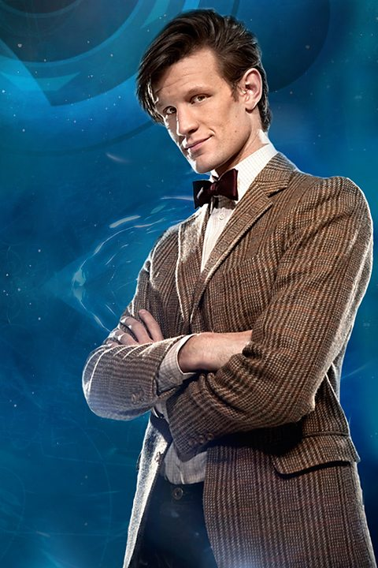

On Birinci Doktor

On Birinci Doktor. Doctor Who İngiliz bilim-kurgu dizisinde diziye adını veren Doktor'un on birinci yüzüdür. 11. Doktor karakteri 2010 yılından 2013 yılı sonlarına kadar Matt Smith tarafından canlandırılmıştır.
11. Doktor'un geleceğinin ilk habercisi Planet Of the Ood'daki Ood Sigma'dır. 10. Doctor'a Şarkınızın bitmesine az kaldı demiş ve 11. Doktor'un gelişini haber vermiştir.
Planet Of The Dead bölümünde: Karanlık geliyor. Sizin şarkınız bitiyor. Kapıyı 4 kere vuracak denmiştir.
The End Of Time bölümüne Zaman Leydisi Bu onun son savaşı diyerek rejenerasyonu belirtmişlerdir.
10. Doktor Donna'nın büyükbabası Wilfred'in Vinvocci Radyasyon Kapsülün'de mahsur kaldığını görmüştür. Vinvocci Radyasyon Kapsülü ise kritik bir duruma gelmiş ve en ufak bir dışarıdan müdahelede Wilfred radyasyona maruz kalacak ve ölecektir. Kapsülün bir tarafının kapısının açılması için diğer taraftan biri'nin girip diğer kapıyı açması gerekmektedir. 10.Doctor diğer kapıdan içeri girer ve Wilfred'in çıkmasını sağlar. Kapsül'deki bütün radyasyon'u 10. Doktor emer ve bu ona fazla gelmiştir. 10. Doktor'un bedeni aşırı radyasyon'a dayanamaz rejenerasyon geçirir ve David Tennant yerini Matt Smith'e bırakır.
11. Doktor Big Bang bölümünde anlaşıldığı gibi fes'leri sever. The Impossible Astronaut bölümünde ise Kovboy Şapkalarına Kovboy şapkası takıyorum. Kovboy şapkaları havalıdır demiştir. 11. Doktor Papyonları'da sevmektedir bu yüzden kırmızı bir papyon takar.
11. Doktor Matt Smith'in favori Doktor'u 2.Doktor'a kişilik bakımından çok benzerdir. Şakacı, Pozitif düşünen, sürekli gülen biridir. 5. sezon'un ilk bölümlerinde 11. Doktor Onuncu Doktor gibi kötü durumlarda etrafındaki insanlara kızıp bağırıyor,öfkesini dışarı vuruyordu. Fakat 6. sezon'da 10.Doktor'dan kalma bu özelliği yok olmuştur.
11. Doktor'da diğer Doctor'lar gibi en sevdiği şey TARDIS'tir. 11. Doctor TARDIS'e Seksi der. 11. Doktor etrafındaki insanlara ve yol arkadaşlarına değer verir. 11. Doktor Let's Kill Hitler bölümünde Donna, Martha ve Rose'u görünce en çok Donna için suçluluk duyduğunu belirtmiştir.
Matt Smith'in Tennant'ın yerine yeni Doktor olarak gelmesinin hayranların bazı kesimleri pek onaylamamıştır. Sebep ise hayranlar tarafından hayranların Tennant'a alışmış olması ve onun oyunculuk performansının Matt Smith'in gösteremediği olarak açıklanmıştır. Matt Smith bu kesimin önyargılarına rağmen hayranların kalbini kazanmayı başarmıştır.
Steven Moffat The Name of The Doctor bölümünün yayınlanmasından sonra Matt Smith'in diziyi bırakacağını, 50. Yıl özel bölümü ve 2013 Noel bölümünden sonra yerini 12. Doktor'a bırakacağını açıklamıştır. 4 Ağustos 2013 tarihinde 12. Doktor'u oynayacak aktörün Peter Capaldi olduğu duyurulmuştur.